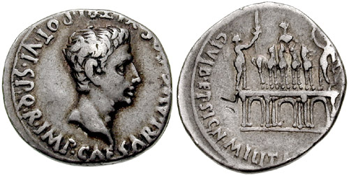
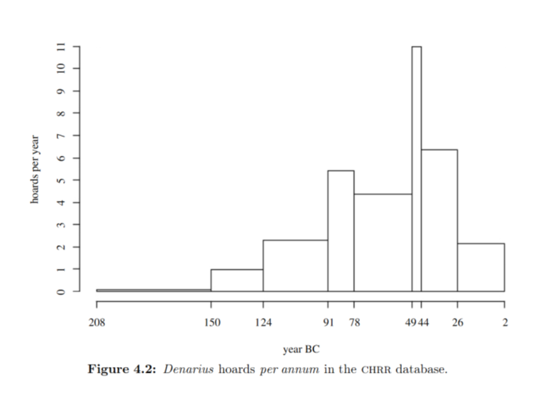
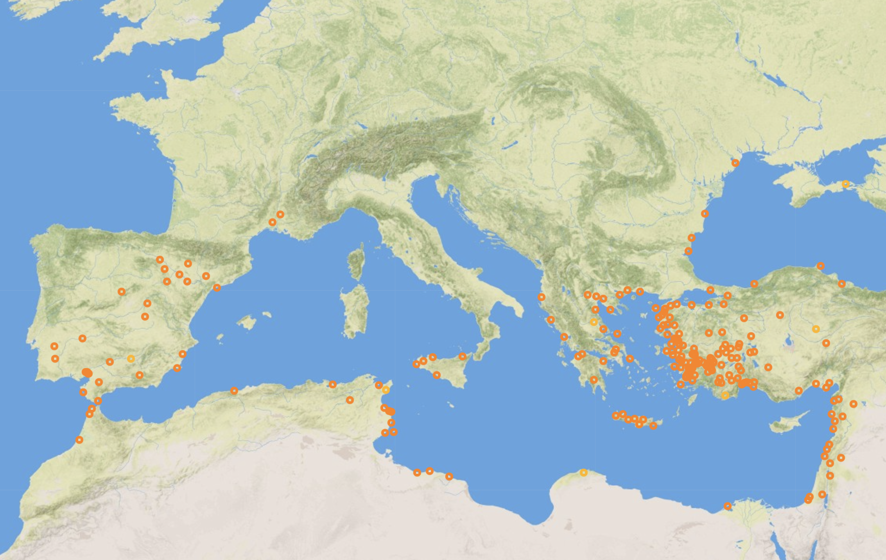

Numismatics are the study of coins in history. Researchers examine coin locations as well as physical appearances to draw conclusions about the Roman world.
Coin appearances offer insight into who produced the coin and specific values the ruler possessed. Inscriptions on the coin can also identify who minted the coin and who was in charge of producing coins during an emperor’s rule. Coins are composed of two sides, the obverse (front) and the reverse (back).
Typically depicted a bust of a divine figure or the emperor at the time. Also included inscription of the Emperor’s name
Usually a symbol that represents an emperor’s values. Can also be a monument or a building that was particularly important to the emperor
While the physical aspects of coins are important, the key to examining coins lies beyond the physical appearance of the coin itself. Historians are able to discern a lot more information from where the coins are found as well as how many of them are found in each location. The distribution of coins as well as their production allows for more interpretive conclusions. The concentration of coins in certain areas represent areas that were heavily involved in commerce and indicated where the heart of Rome’s economy was at the time. Another interpretation could also be due to times of unrest and war, as many people would be killed or forced to flee and leave their currency behind. A sharp increase in coin production could also confirm when significant wars took place. As stated previously, coin production was generally increased during times of war in order to pay soldiers. This conclusion reinforces that Augustus ruled during a time of peace.
Besides the physical inscriptions on coins, modern technology has allowed researchers to examine coin composition to confirm inferences about the Roman world. Modern methods such as studying oxidation levels and corrosion levels allow researchers to identify the exact age of the coin as well as the chemical composition. This is important as the chemical composition indicates the purity of the coin as well as when that purity changed over time. The depurifying of coins was known as debasement which occurred when more currency needed to be created to fund armies during times of war/unrest. Researchers discovering the debasement of coins over time indicates when Rome was facing hard times/wars and also indicates when Rome was facing periods of peace.
Augustus was Rome’s first emperor. He was born in 63 BC and ruled from 27 BC until his death in 14 AD. During his reign as Rome’s first emperor, he was part of several crucial reforms that lasted hundreds of years. Of these reforms, Augustus’ reform to currency and coins is one of the longest lasting legacies of his rule. He ruled during a period of peace that lasted roughly 200 years known as the Pax Romana. This enabled him to focus primarily on growth and trade and was one of the few peaceful eras in the Roman Empire. The coins produced under Augustus reveal trade paths as well as virtues Augustus had during this peaceful era in Roman history.
Augustus’ coin reform was a pivotal decision that helped stabilize Roman economy for nearly 200 years. He introduced smaller denominations below that denarius and used a zinc copper alloy to create these coins. He also minted new gold and silver coins without changing their weight/finesse. The currency he introduced would be used for nearly 200 years before losing its value, far outliving his rule in Rome.
This coin is called the Aureus. It was one of the gold minted coins in Augustus' reign. The coin depicts Augustus on one side and a tortoise-shell lyre on the other. Further analsysis can be found under "Research Paper" on the website.
This coin is an example of a building/monument being depicted on the reverse. This building is the Arch of Augustus and is one of the oldest Roman arches.
This graph breaks down coin production throughout the Roman Empire by year. As we can see, coin production was relatively low during Augustus' reign. An analysis can be found in the "Research Paper" section.
This map depicts the location coin hoards from Augustus' era was found. These locations reveal the economic center for trade and commerce around Augustus' era.
For more detailed analysis, please visit the "Research Paper" section
- In the early Roman Republic times, currency was often bars of material rather than coins
- The term 'coin' came from the word 'consecratio' which was issued by the Emrpror to pay homage to their deceased family members
- Coins were primarily made of copper, silver or gold
- Gold coins were called Auerei, Silver coins were called Denarius and copper coins were called As
- Coins revealed that the ancient Romans traded with India, Iran, Northern Africa and the Mediterranean
- Constantine minted a coin after winning a war over the Alemanni depicting weeping Alemannic tribesmen as a celebration
1. Burnett, Andrew. "The Augustan Revolution Seen from the Mints of the Provinces." The Journal of Roman Studies 101 (2011): 1-30. Accessed November 23, 2020. http://www.jstor.org/stable/41724870 2. Thill, Elizabeth W. “Monuments in Miniature: Architecture on Roman Coinage.” American Journal of Archaeology, March 15, 2017. https://www.ajaonline.org/book-review/3448 3. Di Fazio, M., Felici, A.C., Catalli, F. et al. Microstructure and chemical composition of Roman orichalcum coins emitted after the monetary reform of Augustus (23 B.C.). Sci Rep 9, 12668 (2019). https://doi.org/10.1038/s41598-019-48941-4 4. “Augustus and Currency -.” The Secret of Civilization. Accessed November 23, 2020. http://www.civilization.org.uk/decline-and-fall/augustus-and-currency 5. Thorley, J. "The Development of Trade between the Roman Empire and the East under Augustus." Greece & Rome 16, no. 2 (1969): 209-23. Accessed November 23, 2020. http://www.jstor.org/stable/642851 6. Jeffries, Kevin P. “The Propaganda of Augustus Caesar.” Accessed November 23, 2020. https://wou.edu/history/files/2015/08/Kevin-Jeffries.pdf 7. “Lyre.” Encyclopædia Britannica. Encyclopædia Britannica, inc. Accessed November 23, 2020. https://www.britannica.com/art/lyre 8. David R Sear: Common Legend Abbreviations On Roman Coins. Accessed November 23, 2020. http://www.davidrsear.com/academy/roman_legends.html 9. Kohn, G.C. Dictionary of Wars (1986) p. 374 10. “Search: Map.” RPC. Accessed November 23, 2020. https://rpc.ashmus.ox.ac.uk/search/map?q=augustus 11. “Aureus of Augustus, Emperor of Rome from Rome.” Aureus of Augustus, Emperor of Rome from Rome | Yale University Art Gallery. Accessed November 23, 2020. https://artgallery.yale.edu/collections/objects/125568 12. “RIC I (Second Edition) Augustus 293.” Online Coins of the Roman Empire. Accessed November 23, 2020. http://numismatics.org/ocre/id/ric.1(2).aug.293 13. Ap. Buildings on Roman Coins. Accessed November 23, 2020. http://www.romancoins.info/VIC-Buildings.html 14. Burnett, Andrew. Coins. Berkeley: University of California Press, 1991. 15. Crawford, Michael. Coinage and Money Under the Roman Republic: Italy and the Mediterranean Economy. pp. 257–258, 260. 16. Admin. “Interesting Facts about Ancient Roman Coins.” History and curiosities about coins, May 21, 2017. https://www.coin-competition.eu/history/interesting-facts-about-ancient-roman-coins/. 16. Constantius Ii Constantine The Great Soldier Fallen Barbarian Ancient Roman Coin. Accessed November 29, 2020. http://numismaclub.com/unt/30717-constantius_ii_constantine_the_great_soldier_fallen_barbarian_ancient_roman_coin.html. 17. Non cited information comes from Camino/Course discussions